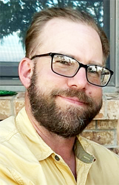
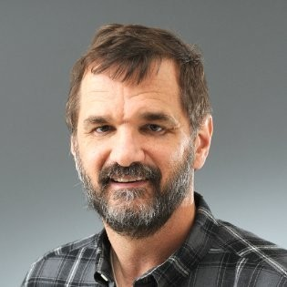
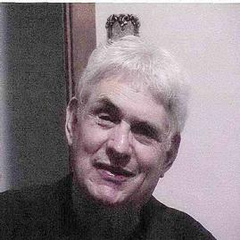

Co-invented Mondaloy with Reza at Rockwell Science Center. Then moved to AFRL's Materials Directorate at Wright-Patterson — the same base McCasland commanded. By 2005 she was leading all materials research for advanced gas turbine engines under McCasland's authority. Received the Meritorious Civilian Service Medal in 2010. Retired 2012 after cancer diagnosis. Died January 5, 2014. AFRL published no memorial. The only US record is a funeral home listing — no name, no dates, nothing. UNSW (Australia) published one brief tribute. No US aerospace institution acknowledged her death.
The only surviving co-inventor of Mondaloy — the nickel superalloy that freed US classified satellite launches from Russian RD-180 dependency. Her research was directly funded by McCasland's AFRL lab from 1999. At the time she disappeared she was the only living person who held co-equal technical knowledge of the alloy's composition with Hardwick. Vanished June 22, 2025. No body found. JPL issued no statement.
The military funder and program director who brought Mondaloy into the US defense supply chain. His laboratory at Wright-Patterson/Kirtland funded and qualified Mondaloy from 1999 onward. He had institutional knowledge of every classified program that used or depended on the alloy. Vanished February 27, 2026 — 4 days after Trump signed the UAP disclosure directive. Left with a revolver. No phone. No glasses. Still missing.
Every human link in the chain that built one of America's most strategically significant rocket technologies is broken. The co-inventor is dead (2014). The surviving inventor is missing (2025). The military funder who ran the program is missing (2026). Mondaloy 200 is now used in the AR1 engine replacing Russian RD-180 rockets for US national security launches — and is embedded in SpaceX and Blue Origin commercial programs. The institutional knowledge chain for this technology has been completely severed. This framing does not appear anywhere in mainstream coverage.
Between February and September 2024, two LANL personnel were killed and at least two others hospitalized in separate crashes on the same stretch of road used daily by employees with top security clearances. The LANL NNSA field manager told the county council: "The most fearful part of [employees'] day is driving up that hill and going home downhill." The DOE installed four traffic cameras "shortly after" these crashes. This pattern — two fatal crashes of classified-research personnel in 7 months on the same road — has never been reported in connection with the broader cluster.
Request all crash reports on NM-501, NM-502, and East Road for 2020–2025 from Los Alamos Police and NMDOT. The clustering of two fatal crashes of LANL personnel in 7 months with no established cause is the least-covered angle in the entire story.
The rocket propulsion physicist who died July 18, 2025 with no employer listed in his memorial. That omission may indicate a classified contractor. His full career history, security clearances, and institutional affiliation need to be confirmed before any publication.
The AIAA published a memorial notice for Bill Deininger with no cause of death. His JPL background, plasma physics expertise, and timing (one day before Reza vanished) make him a significant candidate. Request cause of death from AIAA, his family, or BAE Systems HR records.
His 48 published papers on high-nitrogen heterocyclics and energetic materials synthesis are publicly available. Cross-reference his specific compounds with the nuclear weapon components manufactured at KCNSC — where Steven Garcia worked.
This is the most publishable exclusive finding: three people holding complete knowledge of a strategic US rocket alloy — co-inventor dead (2014, no AFRL memorial), inventor missing (2025), military program director missing (2026). No journalist has written this. Pull Hardwick's AFRL personnel records and the full Mondaloy patent witness list.
Two Naval Research Laboratory physicists died in the same summer window (July and August 2025) with no cause disclosed. NRL's classified programs in directed energy and space-based systems make their backgrounds worth documenting. Start with their published papers and NRL profile pages.